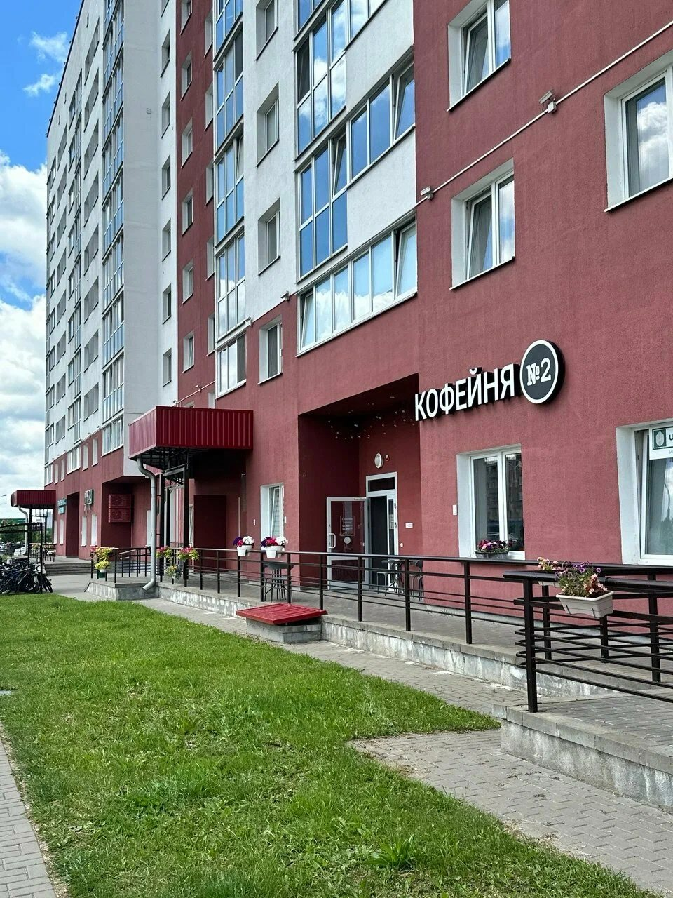

Галерея
Нажмите на фото, чтобы рассмотреть.



Заходите на кофе
Прилукская, 60, рядом с метро Михалово. Кофе и выпечку можно взять с собой.
Нажмите на фото, чтобы рассмотреть.

Прилукская, 60, рядом с метро Михалово. Кофе и выпечку можно взять с собой.